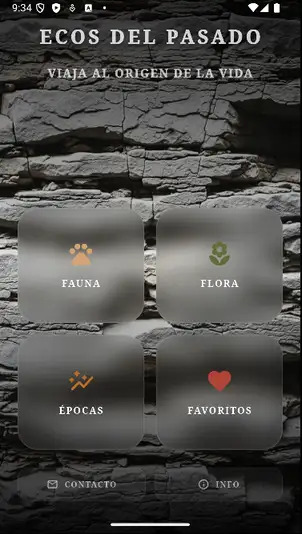
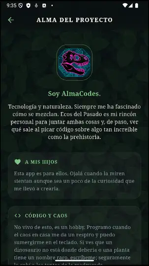
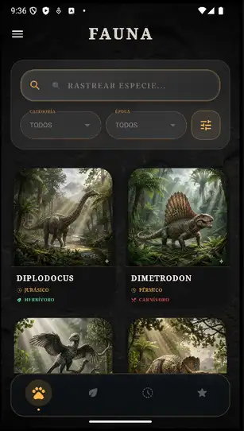
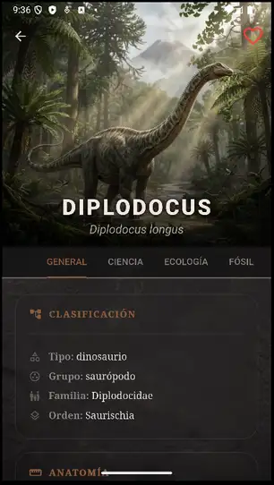
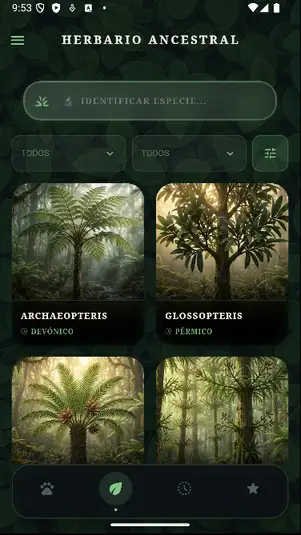
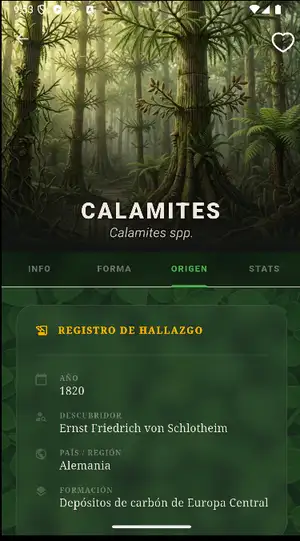
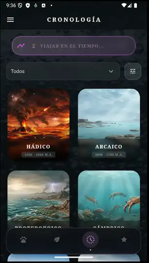

Ecos del Pasado
Un viaje fascinante a la flora y fauna prehistórica en tu bolsillo.
Ecos del Pasado es un atlas interactivo diseñado para los amantes de la paleontología, la botánica antigua y la evolución. Viaja a través de las eras geológicas de la Tierra para desenterrar los secretos de plantas ancestrales y criaturas fascinantes, con fichas científicas detalladas, historias de descubrimientos y un diseño completamente inmersivo.
¿Qué ofrece la App?
Plantas y vegetación prehistórica.
Criaturas y fósiles legendarios.
Filtro cronológico por períodos.
Buscador con secretos ocultos.







Instalar aplicación
📥 Descargar APK
✅ Consulta offline (sin conexión a internet)
🛡️ Sin publicidad, rastreadores ni permisos extraños